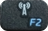

Software Boutique
There is an abundance of software available for Ubuntu MATE and some people find that choice overwhelming. The Boutique is a carefully curated selection of the best-in-class applications chosen because they integrate well, complement Ubuntu MATE and enable you to self style your computing experience.If you can't find what you're looking for, install one of the software centers to explore the complete Ubuntu software catalog.
More Apps Await.
Connect your computer to the Internet to explore a wide selection of applications for Ubuntu MATE.
Once online, you'll be able to download and install tried & tested software right here in Welcome. Our picks ensure that the software featured integrates well the Ubuntu MATE desktop.
Get Connected.
Here's a few things you can check, depending on the type of connection you have:
Wired Connection
- Is the cable securely plugged in?
- Is the router online and can other devices access the network? Try restarting the router.
Wireless Connection
- When disconnected, the applet looks like this:

- You may need to hold the FN key while pressing the function key.
- Here's an example: 
Not working at all or experiencing sluggish connections?
Sorry to hear that. You will need a temporary wired connection to install working drivers.
- The Additional Drivers tab may have them available for your system.
- Otherwise, you will need to manually install third party drivers for your hardware, or a download specific package containing the firmware. See Drivers in the Getting Started section for more details.
- Feel free to ask the community if you need assistance.
Accessories
Handy utilities for your computing needs.
Education
For study and children.
Games
A selection of 2D and 3D games for your enjoyment.
Graphics
For producing and editing works of art.
Internet
For staying connected and enjoying the features of your own cloud.
Office
For more then just documents and spreadsheets.
Programming
For the developers and system administrators out there.
Sound & Video
Multimedia software for listening and production.
System Tools
Software that makes the most out of your system resources.
Universal Access
Software that makes your computer more accessible.
Servers
One-click installations for serving the network.
Discover More Software
Graphical interfaces to browse a wide selection of software available for your operating system.
Miscellaneous Fixes
This section contains operations that can fix common problems should you encounter an error while upgrading or installing new software.
Outdated Package Lists?
Your repository lists may be out of date, which can cause Not Found errors and outdated version information when trying to install new or newer versions of software. This is particularly the case when Ubuntu MATE connects online for the first time after installation.
Update the repository lists:
sudo apt-get update
Broken Packages?
When a previous installation or removal was interrupted (for instance, due to power failure or loss of Internet connection), further software cannot be added or removed without properly re-configuring these broken packages. If necessary, you may need to also resolve dependencies and install any missing packages in order for the software to run properly.
Configure packages that were unpacked but not configured:
sudo dpkg --configure -a
Download and install broken dependencies:
sudo apt-get --fix-broken install
In addition, listed below are terminal equivalent commands that otherwise appear in the Software Updater.
Upgrade all packages that have a new version available:
sudo apt-get dist-upgrade
Upgrade to a new release of Ubuntu MATE:
sudo do-release-upgrade